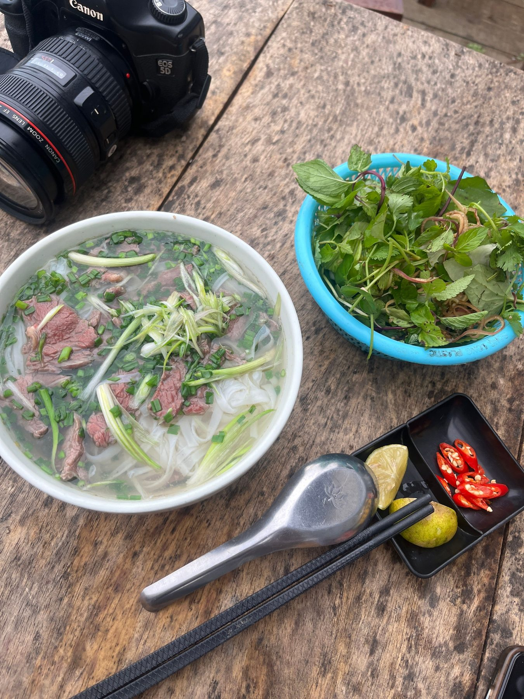
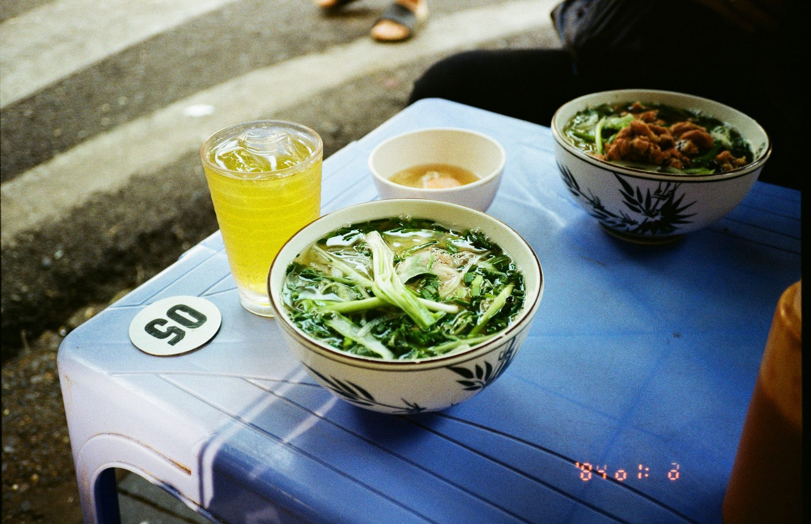
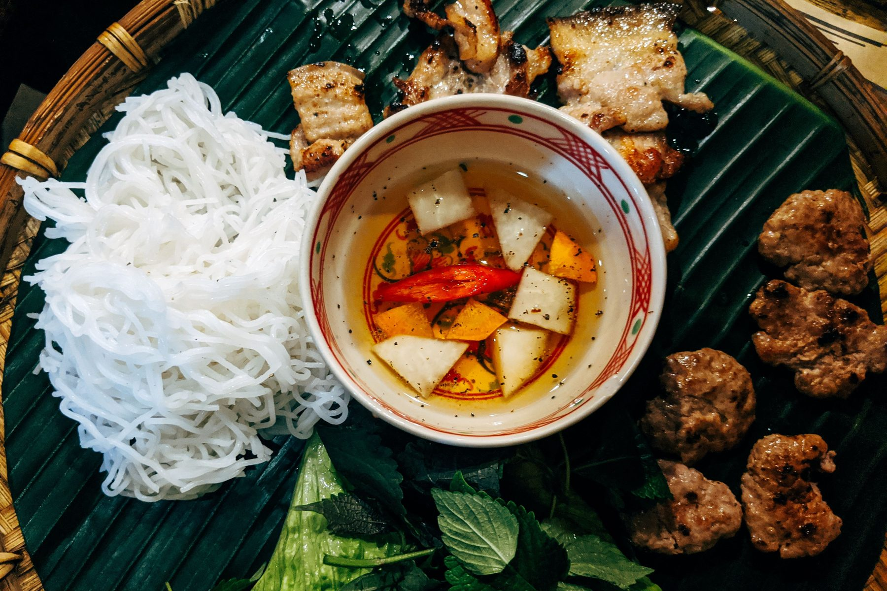
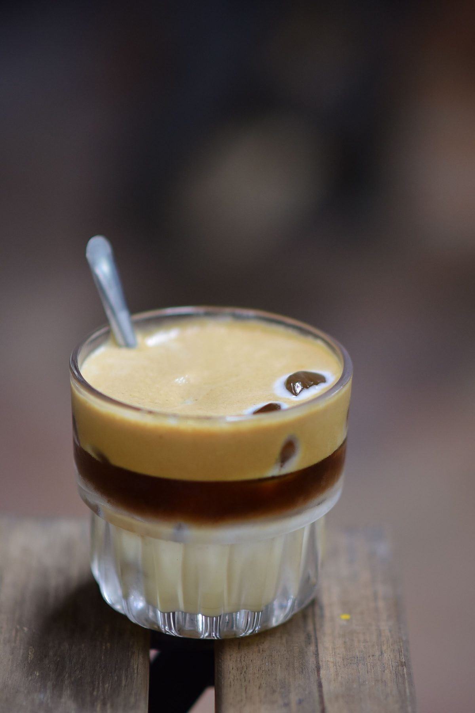
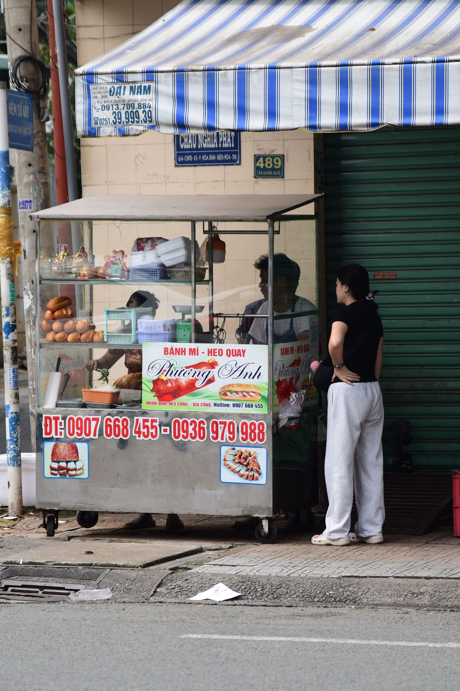
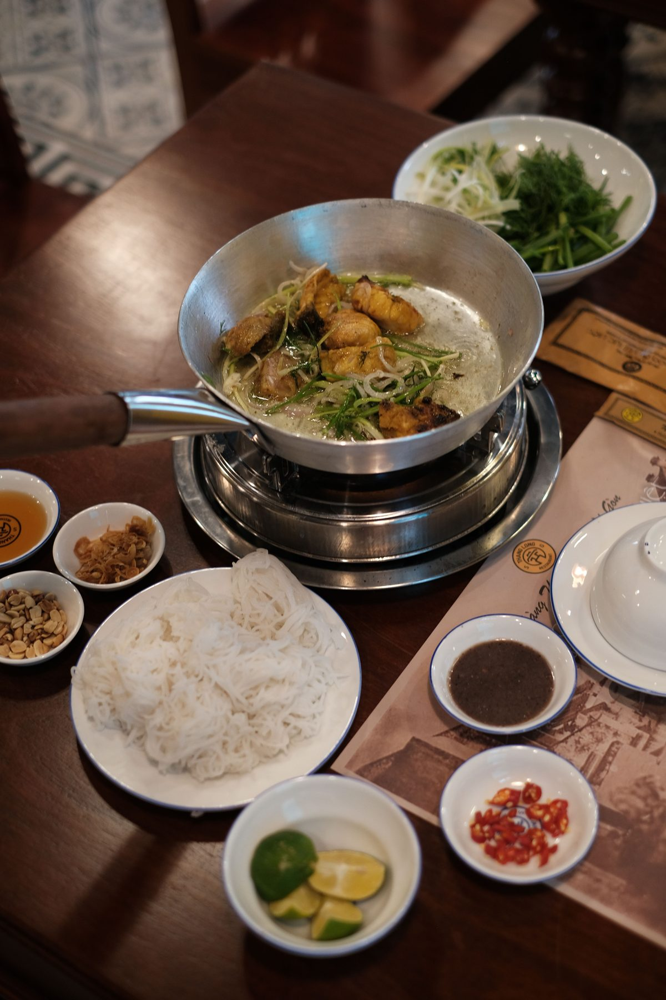
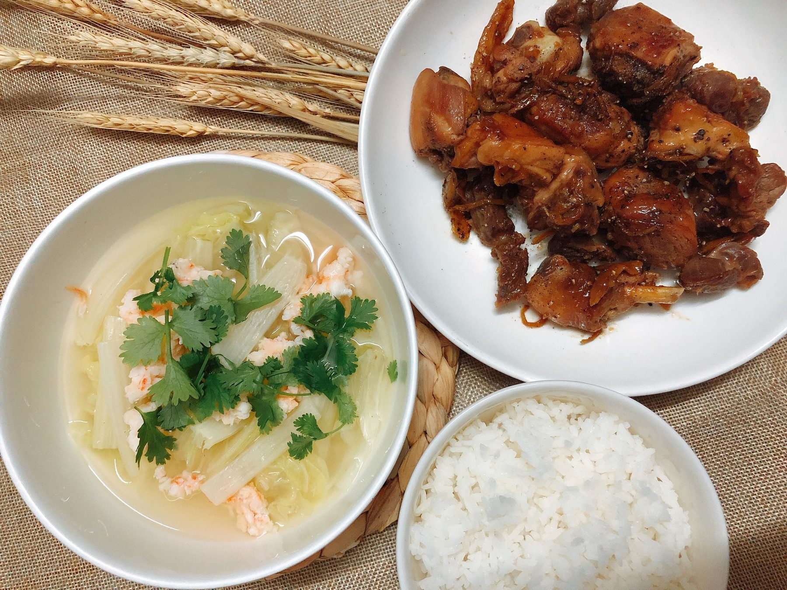

01 · Buổi sáng
Phở
Nước dùng trong, thơm gia vị, bánh phở mềm và phần thịt vừa đủ. Một lựa chọn dễ bắt đầu cho buổi sáng ở trung tâm Hà Nội.

Từ bát phở nóng buổi sáng đến ly cà phê trứng cuối chiều — một vòng hương vị vừa đủ để cảm nhận Hà Nội bằng cách gần gũi nhất.
Không cần chạy theo một danh sách quá dài. Bắt đầu với những món quen thuộc, chọn quán đông khách địa phương, đi vào khung giờ vừa phải và để mỗi khu phố dẫn bạn đến một trải nghiệm khác nhau.

Nước dùng trong, thơm gia vị, bánh phở mềm và phần thịt vừa đủ. Một lựa chọn dễ bắt đầu cho buổi sáng ở trung tâm Hà Nội.

Thịt nướng thơm, nước chấm chua ngọt, bún tươi và rau sống. Ngon nhất khi các phần được dùng cùng nhau thay vì ăn tách riêng.

Lớp kem trứng béo mịn cân bằng với cà phê đậm. Hợp cho một khoảng nghỉ chậm giữa hành trình đi bộ quanh Phố Cổ.

Vỏ bánh giòn, nhân mặn vừa và nhiều lớp hương vị. Phù hợp khi bạn cần một bữa gọn trước khi tiếp tục khám phá thành phố.

Cá nóng ăn cùng rau thơm, bún và gia vị tạo nên một bữa tối có nhiều lớp mùi vị, rất hợp khi đi hai người hoặc theo nhóm nhỏ.

Nhiều món nhỏ dùng chung giúp bữa ăn gần với nhịp sống gia đình hơn: món mặn, rau, canh và cơm nóng tạo thành một trải nghiệm cân bằng.
Gợi ý theo khu vực để bạn kết hợp ăn uống, đi bộ và nơi ở mà không phải di chuyển vòng vèo.
Hợp cho phở sáng, bún chả, món ăn đường phố và cà phê trứng. Nên đi bộ theo từng cụm phố, tránh cố ghé quá nhiều quán trong một buổi.
Xem homestay Hoàn Kiếm →Nhịp chậm hơn trung tâm, phù hợp bữa trưa hoặc tối, sau đó đi dạo quanh hồ. Khu này cũng thuận tiện để thử những quán địa phương ít vội hơn.
Xem homestay Ba Đình →Phù hợp một buổi chiều có cafe, đồ ăn nhẹ và ngắm hồ lúc nắng dịu. Đây là lựa chọn dễ chịu nếu bạn thích không gian thoáng hơn Phố Cổ.
Xem homestay Tây Hồ →Ưu tiên quán có lượt khách luân chuyển đều, khu chế biến gọn sạch và món được làm mới liên tục. Với hàng quán nhỏ, giờ mở cửa có thể thay đổi; hãy kiểm tra lại trước khi đi nếu bạn nhắm tới một địa chỉ cụ thể.